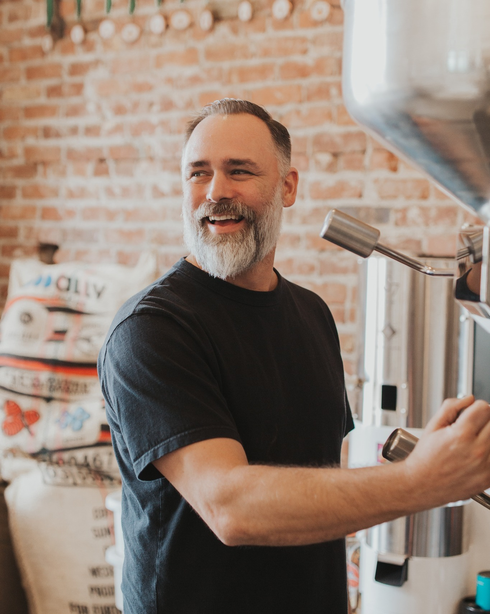
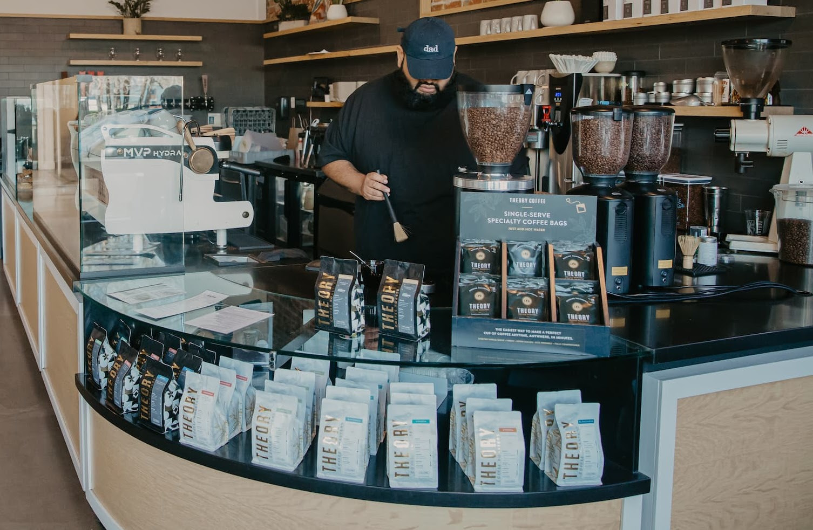
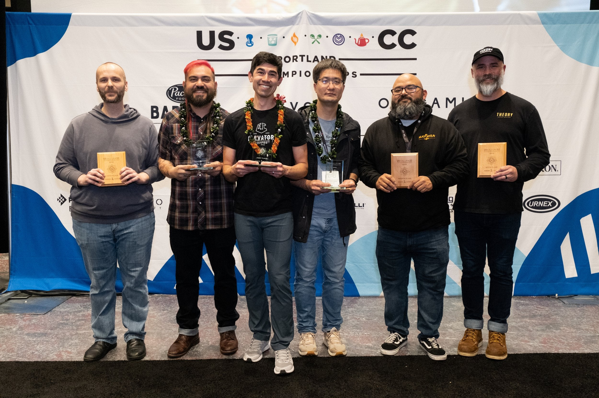

The Roastery — Redding, CA
From a smoked-out kitchen to a top ten roaster. Every milestone, every inflection point, every moment that mattered.
Sam LaRobardiere smoked out his family kitchen roasting green coffee beans in a cast iron skillet. Moved to a popcorn popper. Then a backyard barbecue grill. The obsession had begun.

Started selling bags at the Redding Saturday farmers market. No logo, no brand, just good coffee and a folding table. Sold out every week.
First SalesWon gold in the espresso category at Golden Bean North America. Year one. Still roasting on a barbecue grill. The industry noticed.
Award
Judged alongside the best specialty producers in the country. Finished in the top 10 overall. Theory was no longer a farmers market operation.
AwardNamed one of the 100 best cafes in America by Food & Wine Magazine. A backyard roaster from Redding, California on the same list as the nation's best.
PressEntered a blind tasting competition at Twitter's San Francisco headquarters. Won. Became their sole coffee provider. Small-town roaster, big-tech validation.
WholesaleOpened the original Theory cafe in downtown Redding. Small, intentional, and designed to make every cup feel like something. The brand finally had a home.

Both lead roasters earned Q-Grader certification — the highest professional tasting credential in coffee. Theory was building a team, not just a brand.
QualitySecond location on Hilltop Drive. Drive-through format. Proved that speed and quality can coexist. Became the highest-volume location within six months.
ExpansionThe flagship. Motorcycles parked out front. Full espresso bar, pour-over station, and a retail wall that looks like it belongs in a design magazine. The space where the brand lives.
FlagshipFourth location at the foot of Mt. Shasta. Theory went from a Redding secret to a Northern California institution. New market, same standards.
ExpansionLaunched a formal wholesale program. Restaurants, hotels, offices — all serving Theory. The beans started showing up in places Sam never expected.
GrowthFour locations. Two Q-Graders. Weekly cuppings. A wholesale program spanning Northern California. Direct relationships with farms in seven countries. The obsession hasn't changed. Just the scale.
Present

Theory grows by deepening, not widening. Better sourcing. Better roasting. Better training. Better relationships with the people who drink the coffee and the people who grow it. The next chapter looks a lot like this one — just sharper.